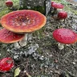
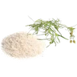

Correspondence Grimoire
Divination

Agaric
FleawortDivination is the practice of seeking knowledge of the unknown through magickal means. It is one of the oldest and most widely practiced forms of magick, spanning every culture and tradition throughout history. Whether you are reading tarot cards, casting runes, scrying into a crystal ball, or interpreting dreams, divination connects you to intuitive wisdom that lies beyond ordinary perception.
Forms of Divination in the Manuscript
The Manuscript contains several systems of divination, each with its own tools and methods:
- Tarot: A 78 card system divided into Major and Minor Arcana, used for deep symbolic readings
- Lenormand: A 36 card system focused on practical, everyday guidance
- Runes: Ancient symbols carved on stones or wood, cast or drawn for insight
- Scrying: Gazing into reflective surfaces such as mirrors, water, or crystal balls to receive visions
- Lithomancy: Casting crystals and stones to interpret their positions and relationships
- Flower Divination: Reading messages through the language and behavior of flowers
- Dream Interpretation: Analyzing the symbolic content of dreams for guidance and prophecy
Preparing for Divination
Successful divination requires a calm and receptive state of mind. Before beginning any reading or session, take time to ground yourself and clear your energy. Many practitioners cleanse their tools with smoke, moonlight, or sound before use.
Set a clear intention for your reading. Ask specific questions rather than vague ones. "What do I need to know about this job opportunity?" will yield more useful insight than "What does my future hold?"
Tools and Materials
Common items associated with divination magick include:
- Purple candles for opening the third eye and enhancing psychic perception
- Mugwort for prophetic dreams and enhanced intuition
- Wormwood for spirit communication and scrying
- Amethyst for psychic clarity and spiritual connection
- Labradorite for strengthening intuitive abilities
- Clear Quartz for amplifying divinatory messages
- Mirrors and bowls of water for scrying practices
Timing Your Divination Work
Moon Phase
Divination is most potent during the full moon, when psychic energy is at its peak. The dark moon (the day before the new moon) is also powerful for shadow work and uncovering hidden truths.
Days of the Week
- Monday (Moon's day): Supports intuition, dreams, and psychic sensitivity
- Wednesday (Mercury's day): Supports communication, messages, and mental clarity
Sideromancy: Divination by Iron
Sideromancy is divination using heated iron. In its traditional form, iron was heated until red-hot in a hearth fire, a process historically reserved for ironworkers who had both magickal knowledge and the skill to handle the heat safely. The practice has evolved into a household method using cast iron pans. Straws are dropped onto the hot surface and the resulting movement, shapes, smoke, and any flames are read as the oracle. Broom straws are traditional; dried yarrow stalks are a powerful substitute due to their association with the I-Ching.
Sieve Divination
Sieves were once considered as magickally significant as cauldrons or broomsticks, and divination by sieve is among the most ancient recorded practices. The classical Athenian method, coscinomancy, involved suspending a sieve by shears or thread and observing its movement while names were chanted. A Middle Eastern method pours sand through the sieve and reads the hills and valleys formed beneath. A third variation divides the sieve between white flour and charcoal powder and uses a pendulum to trace oracular patterns.
Lunar Divination
A bright full moon shining low on a clear, cloudless night provides one of the most powerful natural scrying surfaces available. When conditions are right, venture outside and expose yourself to the moonlight directly. The divination itself can be performed indoors or from a shaded position, but direct exposure to moonbeams enhances psychic receptivity. The moon can be gazed at directly, or its light can be reflected into a scrying medium such as a pan of water, a mirror, or a crystal ball. Water used in lunar divination is simultaneously charged with the moon's energy and can be reserved for future spellcasting.
Lampadomancy: Lamp Divination
Lampadomancy is divination by lamp flame, an ancient practice rooted in Egyptian and Mesopotamian tradition. Because candles were once rare and costly, oil lamps were the far more common magickal light source. The oracle is read from the behavior and appearance of the flame.
A traditional magick lamp is a terracotta dish with sides high enough to contain the oil and flame. A coiled strip of linen rests in the oil with one end hanging over the edge to serve as a wick. The lamp can be embellished with painted or carved designs. The choice of oil varies by tradition. Egyptian practitioners reportedly favored palm oil. Olive oil, despite its association with Arabian lamp imagery, was actually an expensive commodity in the ancient Near East. Both remain in use today, as does castor oil in Louisiana-based lamp magick.
Children as Oracles
Children have historically been used as oracles and mediums across many cultures, valued for what practitioners described as a purity of perception unclouded by self-interest or social conditioning. Ancient sources including Egyptian mythology credit children with the ability to observe and report truthfully what adults might overlook or rationalize away. In the Isis and Osiris tradition, it is children who provide Isis with the observations she needs when all other sources fail.
These methods carry significant ethical concerns and are considered historical rather than practical guidance. Any involvement of a child in divinatory or mediumistic practice must be entirely voluntary, treated as play with no pressure of any kind, and stopped immediately if the child is unwilling or uncomfortable. An unwilling participant cannot produce a reliable oracle regardless of the tradition behind the method. When a child reports seeing nothing, that answer is complete and final and must not be pushed further.
Calendar Oracles
Certain oracles are associated with specific dates or nights of the year, when conditions are considered most favorable for that particular form of reading.
Candlemas Bull Augury (February 2): In this folk tradition, a cloud in the shape of a bull appears early in the morning on Candlemas. The direction the bull faces carries the oracle for the year ahead: facing east indicates abundance, facing south warns of grain shortages, and facing west signals a lean and difficult year. The bull is said to move through the sky and will deliver its reading to anyone who finds it.
Bibliomancy: Book Divination
Bibliomancy is divination through the random selection of a passage from any book. While sacred texts such as the Bible, the Quran, the Vedas, and classical epics are traditional sources, the method works with any substantial book, including dictionaries, encyclopedias, and large reference volumes. The basic principle is consistent across all variations: a question is held in mind, the book is opened at random, and the passage revealed serves as the oracle. Several methods exist for selecting the exact passage, including pointing with a finger, piercing the page with a needle, or tossing dice.
Belomancy: Arrow Divination
Belomancy is an ancient form of divination using arrows, documented in the Bible and widely practiced among Babylonian, Scythian, Slavic, and Germanic peoples. In one method, inscriptions are attached to an arrow before it is shot. The distance it travels or another predetermined condition determines which inscription serves as the oracle. In a second version, three arrows are used: one carries an affirmative answer, one a negative, and the third is left blank to indicate that the answer cannot yet be revealed. The arrows may be distinguished by their inscriptions or by other markings.
The Mantic Arts
Divination has historically been treated as a sacred profession. In many cultures, every community maintained at least one skilled diviner whose role was as respected as that of a healer or elder. Persecution and social pressure forced these practitioners underground over time, but the need for their work never disappeared. People adapted by developing accessible, personal methods they could practice without formal training or specialist tools. Many of the simpler systems in use today grew directly from that tradition of self-taught, home-based practice.
The word divination shares its root with the divine. Even the most casual or playful method of reading carries a sacred dimension and deserves the same care and grounding you would bring to any other magickal working.
Practitioners of divination are sometimes called by the term readers, or referred to as diviners. The broader field they work within is known as the mantic arts, from the Greek mantikos, meaning prophet. Words ending in the suffix -mancy (such as geomancy, pyromancy, or cleromancy) all refer to specific forms of divination.
Wicce, the Wise One
The word witch traces back to the same Old English root as wit and wise. In its earliest form, Wicce or Wicca simply meant a knowledgeable or wise person, someone versed in an arcane understanding that religious and civil authorities of the time generally treated as forbidden. Any consultation of a witch has traditionally opened with exactly this kind of diagnostic work, an occult reading of the situation before any action is taken. Finding things out remains just as central to the practice today.
The First Rule of Practical Witchcraft
One of the earliest rules a practical witch learns is to divine before acting. Cast first to diagnose the true nature of a situation, and again to judge whether the working you have in mind is actually likely to succeed. There is no sense loosing a heavy piece of countermagic on an imagined enemy when a simple charm of protection would do the job just as well. Divination comes first so that whatever working follows is the right one.
Time, Choice, and the Deep Mind
Traditional witchcraft treats time not as a single fixed line but as a field branching in many directions at once, so a person's future exists as concretely as their past even though most of it stays unseen. This does not mean the future is rigidly fixed. At every moment a person faces a set of possible paths, and free will, talent, and circumstance all still shape which path is actually taken.
When a diviner reads someone's fate, she is reading the client's deep mind for the most strongly marked of these possible futures at that particular moment, not a single unavoidable outcome. Other paths remain open, and how aware a person becomes of their own direction, their karma, still matters.
How Curses and Blessings Work
Because a person's future is decided at the level of the deep mind, a working of malefic or beneficent magick functions by adding the caster's will to that balance, tipping a target's choices toward one direction rather than another. Reaching the deep mind directly is the whole point of the working.
This is also why such workings can fail, and fail dangerously. A target whose own resolve runs deep, or who is a powerful practitioner in their own right, may not be moved at all. Worse, the energy set loose can recoil back onto the sender's own deep mind instead, the classic trap of being hoist by one's own petard. This risk, and the countermagic used to guard against it, is a subject of its own.
The Power Behind Divination
Across many traditions, the actual working of divination has been linked to the power represented by the astrological symbol of Mercury: called Hermes by the Greeks, Thoth by the Egyptians, Odin by the Scandinavians, and Woden by the early Anglo-Saxons. This power is tied to the starry sky, the air, storm winds, and the crossroads, and appears in the Vodou tradition as Maitre Carrefour, Master of the Crossroads, also titled Psychopompos, Guide of Souls. Witches most often call on it by the name Herne. See  Mercury for the fuller correspondence.
Mercury for the fuller correspondence.
Before any divination, tradition holds that a witch should first bring her own deep mind into contact with this power, whether the method at hand is as simple as casting lots or as involved as questioning a spirit through a scrying medium. A time-tested way to do this is consecrating and using a Square of Mercury.
Synchronicity and How Divination Works
Divination operates through the principle of synchronicity. Rather than accepting coincidence as meaningless, synchronicity holds that events occurring at the same moment are meaningfully connected and can illuminate each other. A pebble cast at random, a flame observed at a specific instant, or a card drawn from a shuffled deck all reflect the energetic conditions of that precise moment. Learning to recognize and interpret those reflections is the core skill of divination.
Formulating Your Question
Every act of divination begins with a question, and the quality of your question shapes the quality of your answer. Oracular responses are often precise to the point of being literal, so vague or careless wording can lead to answers that technically respond to what was asked rather than what was meant.
Before beginning any reading, take the time to write your question down. State it in clear, specific language. Reviewing the written question alongside the response afterward helps you interpret nuance, refine your practice, and resolve any ambiguity, especially when reading with others. A well-formed question is the foundation of a useful reading.
Choosing a Method
Some situations call for a particular system by their nature. The kind of information you need and the form it might take can point you directly toward one method over another. In other cases, personal temperament matters: sustained, visual scrying suits a different kind of practitioner than fast, tactile casting methods. When no obvious choice presents itself, pay attention to which method draws your curiosity. That pull is often the invitation itself.
Developing Your Practice
Divination is a skill that deepens with regular practice. Keep a journal of your readings and revisit them over time to see how the messages unfold. Notice patterns in the symbols and images that appear most frequently. Your personal relationship with your tools will strengthen the more you use them.
Trust your intuition above all else. Books and guides provide a foundation, but the most meaningful insights come from your own inner knowing.
Scrying Methods
Buffed Nail Scrying: To maximize spontaneity or eliminate cost entirely, buff your thumbnail to a high polish. No oil is needed. Gaze at the nail, turning it slightly to catch the light. Allow inspiration to arrive without effort or direction.
Mirror Divination
The most ancient mirrors were not crafted from glass but from smooth metal surfaces, typically copper, polished until they showed a reflection. Reproductions of ancient Egyptian mirrors lend themselves well to divination work and may require periodic polishing to maintain their reflective surface. Modern glass mirrors are more accessible and more obviously mimic the reflective power of still water.
Traditional Italian magick mirrors have a glass face and a highly ornamented metal backing, often depicting spirits or sacred figures. Those bearing images of Turan, the Etruscan Venus, are particularly suited to receiving guidance around romance and love. Mirrors in general carry strong associations with love spirits such as Hathor and Aphrodite, as well as mermaid spirits, making them natural tools for romantic oracles. Ancient Egyptian mirrors frequently incorporated Hathor's image into the handle, so that holding one becomes an act of communion with her.
The simplest mirror divination method: gaze into the mirror and allow your mind to wander. Impressions, images, and intuitions will arise without effort or direction.
Oracle Sage (Salvia divinorum)
Oracle Sage, whose Latin name Salvia divinorum means diviner's sage, is associated with oracular and psychic use and is believed to be the legendary consciousness-opening substance of the Aztecs. Unlike a structured divination system, oracle sage is understood to open the gates of psychic ability directly, producing effects comparable to those attributed to the Delphic pythonesses. Burn, breathe, and receive what comes.
Pendulum Divination: Botanical Weights
Certain roots make excellent pendulum weights due to their inherent magickal properties. Attach a piece of orrisroot or angelica root to a cord and use it as a pendulum. The root's own associations enhance the pendulum's receptivity to the query.
Salt Divination
Salt offers three distinct methods of divination, each reading the element in a different form.
Method 1: Toss salt or let it dribble through your fingers. Interpret the patterns it makes in the air as it falls.
Method 2: Pour salt through a sieve while actively shaking and moving the sieve. Observe and interpret the patterns the salt creates once it has settled.
Method 3: Throw salt into fire and interpret the resulting flames, reading their color, height, behavior, and patterns as the oracle.
Ophiomancy
Ophiomancy refers to divination by snake, and theoretically requires more than one snake to accomplish. Those with access to a pit or enclosure filled with snakes will find this a profound method. Formulate your question, then observe the snakes' movements and particularly the display of their skin's colors and geometric patterns. Apply the same interpretive methods used in scrying from water, oil, or ink.
Molybdomancy
Ceromancy, the oracle of melting wax, derives from an older practice called molybdomancy, which uses identical methods but substitutes metal for wax. Lead or tin was historically used in place of wax, particularly in ancient Rome where scrap metal was more readily available than the costly commodity of wax. Metal carries its own distinct magickal and astrological qualities. Tin falls under the dominion of Jupiter, the planet of expansion and good fortune. Lead carries the attributes of Saturn, a planet associated with structure, limits, and sober wisdom. Either metal may be substituted for wax in any ceromancy working.